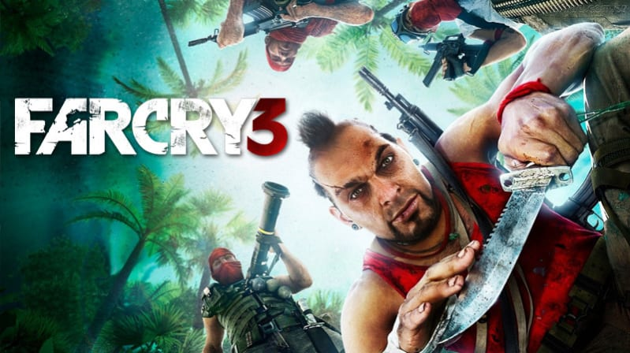
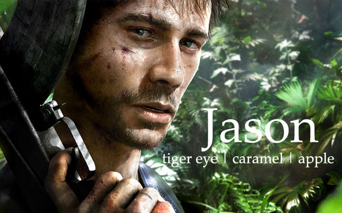
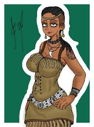
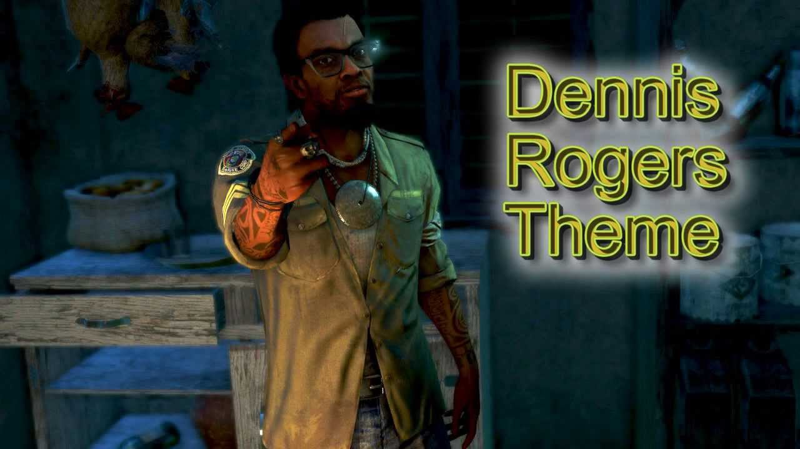
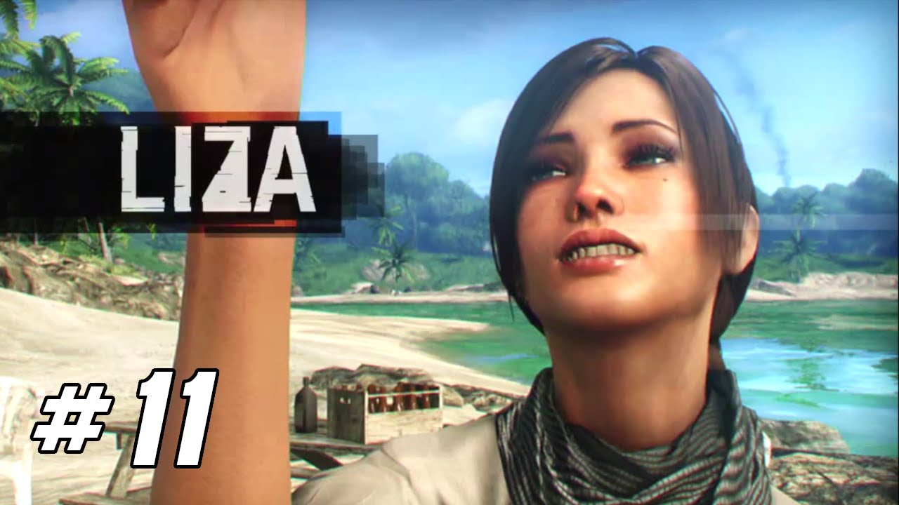
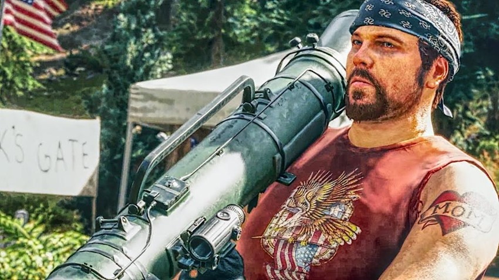

En "Far Cry 3", juegas como Jason Brody, un turista que queda atrapado en una isla tropical infestada de piratas y mercenarios. Después de que sus amigos sean capturados, Jason se encuentra inmerso en una lucha por la supervivencia y la venganza. Para rescatar a sus amigos y escapar de la isla, Jason debe enfrentarse a sus propios miedos y convertirse en un guerrero habilidoso, aprendiendo de los locales y enfrentándose al líder pirata, Vaas Montenegro, en un enfrentamiento épico.

Historia de Far Cry 3
|  |
Jason BrodyEs el protagonista principal. Un turista joven y despreocupado que queda atrapado en la isla. Jason inicialmente es ingenuo e inexperto, pero a medida que avanza la historia, se transforma en un guerrero determinado, motivado por salvar a sus amigos y vengar sus muertes. |
Vaas MontenegroEs el antagonista principal y líder de los piratas que capturan a Jason y sus amigos. Vaas es un hombre cruel y psicótico, que representa la locura y la brutalidad en la isla. Su presencia es impactante y desafiante, lo que lo convierte en un personaje inolvidable. |
|
|  |
Citra TalugmaiEs la líder de la tribu nativa Rakyat, que habita la isla. Citra es una figura misteriosa y seductora, que ve en Jason un potencial guerrero y lo manipula para que cumpla con sus propios fines. Su relación con Jason es compleja y llena de tensiones, ya que ella representa tanto la salvación como la corrupción. |
Dennis RogersEs un miembro de la tribu Rakyat que ayuda a Jason en su búsqueda de venganza y redención. Dennis actúa como mentor y guía espiritual, proporcionando sabiduría y apoyo mientras Jason se adapta a su nuevo papel como guerrero. |
 |
|  |
Liza SnowEs la novia de Jason y uno de los amigos que es capturada por los piratas al principio del juego. A medida que la historia avanza, Liza se convierte en un símbolo de la humanidad y la conexión emocional de Jason con su vida anterior, lo que lo motiva a seguir luchando. |
Buck HughesEs un mercenario y cazador de tesoros que tiene sus propios intereses en la isla. Buck se cruza en el camino de Jason en su búsqueda de información y recursos, y su presencia agrega un elemento de intriga y peligro a la historia. |
 |
Soundtrack de Far Cry 3
El soundtrack de "Far Cry 3" es uno de los aspectos más memorables del juego, complementando perfectamente su atmósfera intensa y envolvente. Compuesto por Brian Tyler, la música del juego se destaca por su capacidad para intensificar las emociones y la acción a medida que te adentras en la peligrosa isla de Rook.
"Further""Further" es una de las pistas más icónicas del juego, utilizada en momentos clave de la historia. Su mezcla de percusión tribal y electrónica crea una sensación de urgencia y tensión que refleja perfectamente la lucha de Jason por sobrevivir. |

|
"Make It Bun Dem"Interpretada por Skrillex y Damian "Jr. Gong" Marley, esta canción suena durante una de las misiones más emocionantes del juego, en la que Jason quema los campos de marihuana. La energía de la canción complementa perfectamente la adrenalina del momento. |
|
"Heat"La pista "Heat" es otra pieza memorable del soundtrack, destacándose en varias escenas de acción intensa. Su ritmo acelerado y sus elementos electrónicos contribuyen a aumentar la emoción durante los enfrentamientos. |

|

|
"Insanity""Insanity" captura la esencia de la locura que impregna la isla y sus habitantes, especialmente el antagonista Vaas Montenegro. La música refleja la intensidad y el caos del entorno de Far Cry 3. |